This week I learned how to use AWS and Github to code a website.
The class created accounts to start coding, and pasted all our website links in one Google Sheet to make it accessable.
I reviwed HTML code such as "br" to make a space, "p" to make a paragraph, "b1,b2" etc. to make text sizes, and "heading" and "title."
In AWS, we write a weekly journal based on what we have done that week, and use git add *, git commit -m, and git push in a terminal in order to save it into our website.
On the 24th of August we did a class project that involved attempting to transport a marble by aligning pipes until it reached the cup on the floor.
We eventually completed the challenge, by starting the rout as high as possible, and keeping the marble at a stable speed.
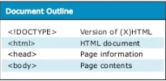
8/27 - 9/2 Week 2
This week I learned about Mechanical Engineering.
This is a form of engineering that consists of mathematics, physics, drafting, manufacturing, thermodynamics, material science, fluid mechanics, and structural analysis.
I learned what a Rude Goldberg machine is, which consist of wheel and axels, levers, pullys, inclined planes, wedges, and screws.
The main focus of attempting to learn mechanical engineering was Tinkercad, which is essential drafting and designing.
We learned how to make shapes, combine, align, rotate, move, and make holes in them.
As a challenge this week, we made our option of a home appliance in Tinkercad to test our skills.
I made a roll of toilet paper using cylinders.
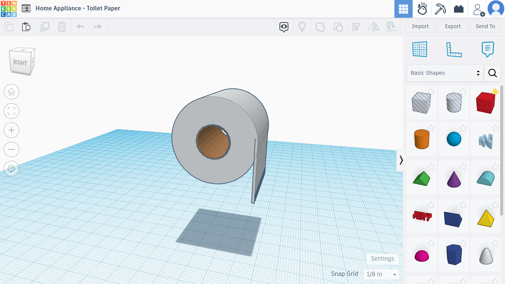
9/3 - 9/9 Week 3
This week we used Tinkercad to help make a design that utilizes a pulley, inclined plane, and a wheel and axle.
The point of the whole project is to originally start with a baseball, that eventually starts a cycle that pops a baloon.
We shared the plane with all our groupmates, and we all worked to create something that was to scale and seemed to work.
In Tinkercad, we used settings to change grid sizes and align and group tools to create desired shapes.
Towards the end of the week, we started to use the design as a reference to real life.
Using materials such as hardboard, cardboard, tape, and box cutters we developed a foundation for our design.
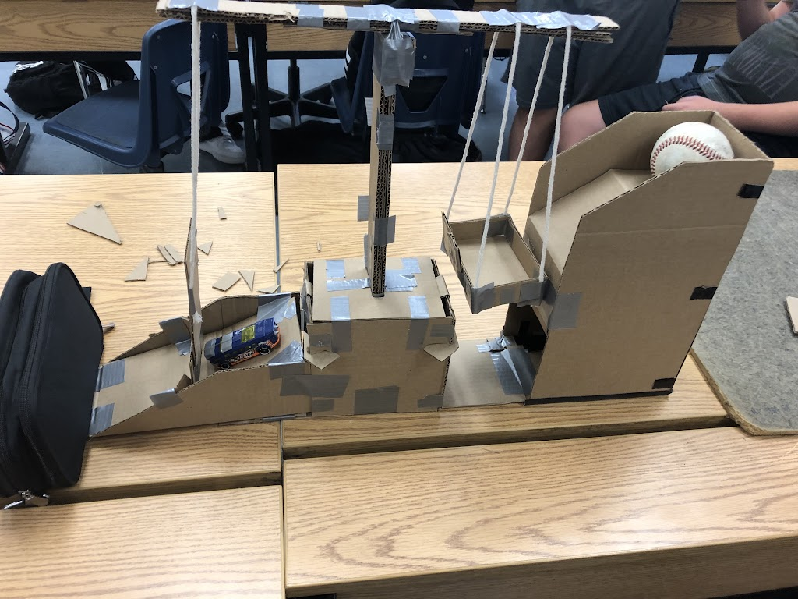
9/10 - 9/16 Week 4
This week we spent most of our time finishing the Rude Goldberg project.
We used Tinkercad throughout our class in order to calculate dimensions.
Using cardboard and tape, we made box-like structures in order to maintain a stable base.
Me and my team made the pulley that we were using to transfer movement from the ball to the car, by carefully balancing a stack of cardboard on a beam.
At first it was too flimsy, so we added more tape to make sure it could hold the baseball's weight.
After the pulley would move upwards, it would ascend a wall that would allow a needle attached to a toy car to roll down a ramp and
pop the baloon.
9/17 - 9/23 Week 5
This week we completed two engineering challenges.
One was the engineering "E".
In this challenge, we individually drew the letter E on the paper, everyone labeled theirs with different lengths and shapes.
After we finished, we swapped E's with another classmate and tried to recreate their "E" on a blank paper using only the measurements provided.
This challenge made us learn the importance of measuring properly and labeling accurately.
Our second challenge was creating a paper boat.
This paper boat was only made of paper and tape, and could only be designed in ten minutes.
We all chose a weight we thought our boat could withstand and put it to the test by letting it float in water for five minutes.
My boat successfully held 27 kgs of weight for the full time.
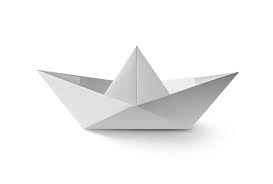
9/25 - 9/29 Week 6
This week we took apart a computer.
We started with removing parts of the computer by followign a slide with step by step directions.
As we disesembled the computer and its parts, my partner and I captured photos in order to remember the location of specific parts.
After everything was removed, we screwed and added the parts back together.
Lastly, we colored a worksheet that represented the computer parts, and plugged in the computer to see if it worked.
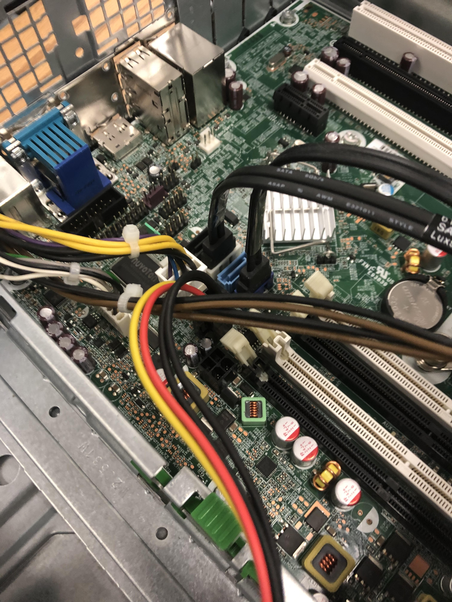
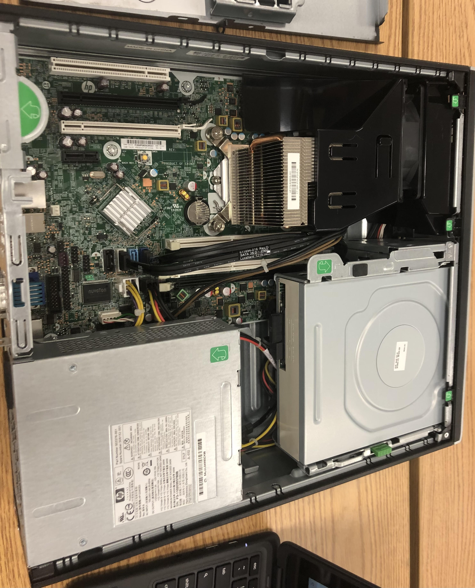
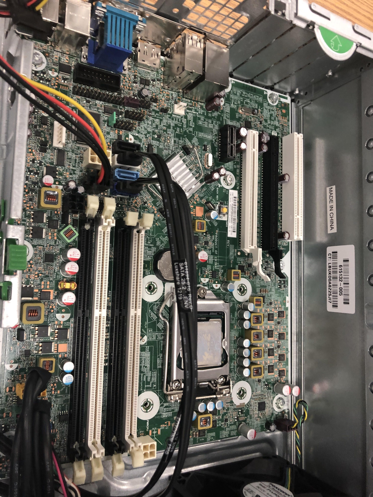
10/2 - 10/6 Week 7
This week we went over bioengineering.
Me and my partner were challenged with making a prosthetic arm using only cardboard, tape, and string.
We made a sketch, and settled on a design that fit on a working hand and moved accordingly to the fingers.
To do this, each finger was sorrounded by a ring, connected to a string that would pull or release.
At first, it didn't grip very well, but we added deeper ridges in the fingers and tighter strings to help.
In the end, we completed the challenge by grabbing and lifting a plastic bottle using the prothetic arm.
Also, I created a prosthetic leg for an animal in Tinkercad by using different shapes to create toes, joints, and chambers.
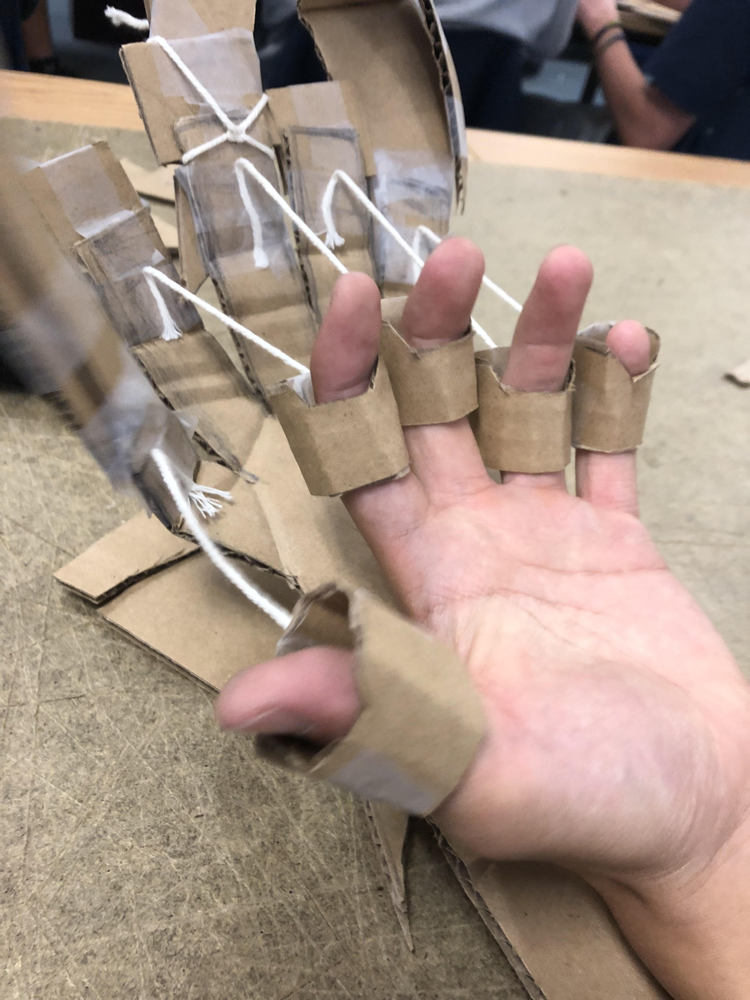
10/9 - 10/13 Week 8
This week we covered aerospace engineering.
we learned about the forces on aircrafts which are, weight, thrust, lift, and drag.
In class, we individually designed our own aircrafts in Tinkercad.
I made a rocketship that was to scale of a two liter bottle.
It included four long fins that will assist the bottle to fly further.
I also added a cone shape design at the top of the bottle to make it more aerodynamic.
Next week, the class will compete to see who will have the highest fying rocket bottle.
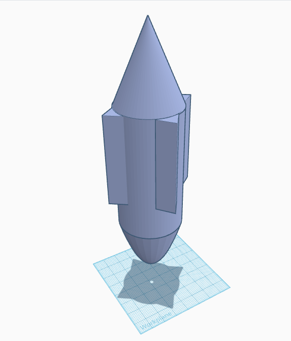
10/16 - 10/20 Week 9
This week we finished building and tested our rocket bottles.
We added support to the wings using a hot glue gun to maintain balance and direction.
On the field where we tested the planes, the bottles were filled with pressure and water, and were sent off to fly.
We chose to fill our glider with about 70 psi of pressure, and 2 cups of water.
Our bottle flipped in the air and landed about 5 yards away from launch, about average distance compard with others.
If me and my partner did this again, we would apply more of a missile design and use less pressure when launching.
10/23 - 10/27 Week 10
This week we learned about environmental engineering.
It includes controlling air polluton, water quality, wastes, and other forms of pollution and safety hazards.
Our class did a water clarification project, where we added black water to a soda bottle that filtered through rocks, sand, cotton balls, and pebbles.
Me and my partner decided to add tne cotton balls towards the bottom, then worked upwards with sand, pebbles, and rocks.
We poured the black water with wood and dirt in it, into the bottle and watched it filter out.
This process was repeated unitl we got a semi-clear, yellow water.
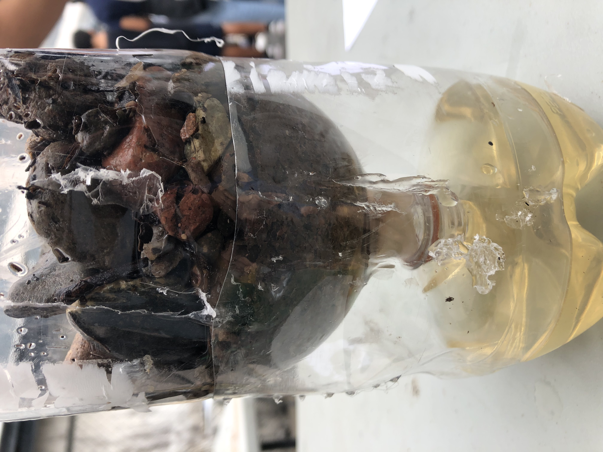
10/30 - 11/3 Week 11
This week we began our electrical engineering unit.
learned about voltage, current, resistance, and power.
We used equations such as V=IR, to calculate measures of elctricity in circuits.
Paralell circuits are one big circle of power, while series circuits are mamny seperate loops.
We used Tinkercad to assemble paralell and series circuits using a breadboard, LEDs, resistors, and wires.
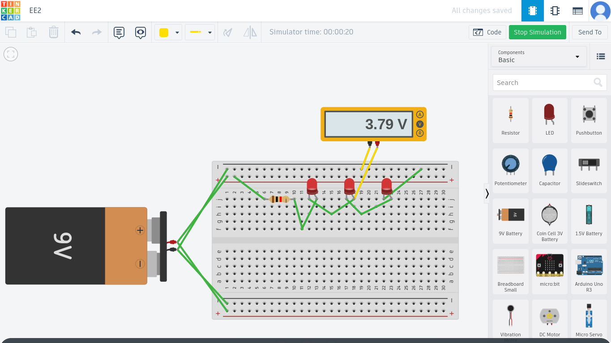
11/6 - 11/10 Week 12
This week we started to assemble circuits on breadboards.
We used an Arduino to power or circuit, and were also given resistors, wires, and colored LEDs to make parallel and series circuit.
We attemted to make a one-light circuit, series circuit (3LED), and a parallel circuit (3LED).
For a long time it was very confusing why our LEDs were not flashing, but eventually we moved wires into the right spots and made sure all the LEDs had working diodes.
Me and my partner even experiented with different color LEDs and putting wires in different spots.
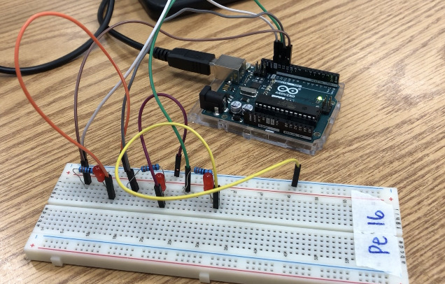
11/13 - 11/17 Week 13
This week we started learning about business engineering.
We studied the waterfall method which is a method of prject management that is in the order of requirements, design, implementation, testing, and deployement and maintenance.
We also learned about a Kanban Board and UI and UX in marketing.
Later in this week, we formed groups and brainstormed for an idea to present as a Shark Tank pitch.
We origninally thought of an ice cream drip resistance cone, but thought it would be a hard idea to expand on and sell.
Instead, we stayed in the food sector, but shifted to thinking of a product that would kepp hot foods warm, like a reheatable spoon.
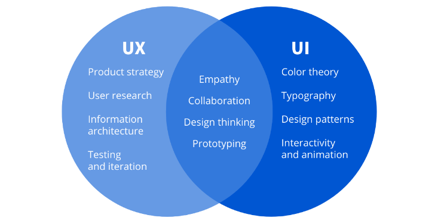
Week 14
This week we started working on a Shark Tank presentation as a group project.
While we were brainstorming, we thought it would be cool to create a product that kept hot foods warm and could heat them up quickly and efficiently.
This was a shift from our first idea of a drip-resistance ice cream cone.
We researched to make their weren't to many similar products, then started to fill out google slides.
We added the problem we were trying to solve, our distribution and manufacturing, sales, cost, future goals, and final offer.
We thought ours was the most complete presentation (:
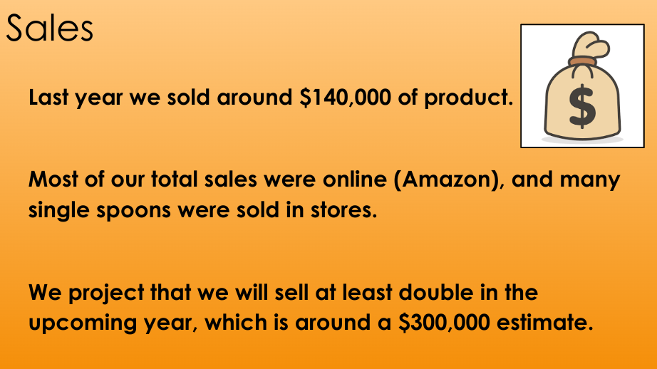
Week 15
1. What was the weight of your bridge?
Our best bridge weighed 46 grams.
2. What was the weight held by your bridge?
Our best bridge held 2035 grams of water.
3. What was the ratio of weight of bridge to weight held?
The ratio of our best bridge was 44; it held 44 times of its own weight.
4. What was the heaviest part of your bridge? What contributed most to the weight?
The base of our bridge was the heaviest part, and contributed most to the weight.
5. Where did the design of your bridge come from? Inspiration? Research?
The design of our bridge was inspired by the triangle architecture that is seen in many bridges.
The trusses are a type of framework that we researched that keeps bridges very stable.
6. Did the design work as intended? Better? Worse?
The design did work as intended, nothing unexpected snapped.
Our bridge placed third best in terms of ratio of weight to weight held.
The trusses and overall design seemed to hold the bucket of water whilst being stable abd strong, and was flexable when challenged with more weight.
7. What was the point of failure of your bridge? Was that the expected weakest point?
The point of failure was on one edge of the bridge.
This was not entirely expected, because this means that something on that side was loose, not glued properly, or not supported thoroughly.
8. What can you do to improve your bridge? What can prolong points of failure?
We could have improved the parts of the bridge that are only held by one strand of spaghetti were particullarly vulnerable because they have to handle more pressure single-handedly.
We could have cut more smaller strands of spaghetti and glue it to connect and strengthen parts of the bridge that are only held together by one piece.
9. Post building progress photos of your bridge
EMAIL
10. Post photos of before your bridge (many photos)
EMAIL
11. Post a video of your bridge
EMAIL
S2 Week 1
This week we learned about Chemical Engineering.
Part of their job is ensuring compliance with health, safety, and environmental regulations
Also conducting research to improve manufacturing processes and designing and planning equipment layout
Processes such as metallurgy, microfluidics, mineral processing, molecular engineering, gas processing, nuclear reprocessing, and oil exploration are involved with chemical engineers.
Our project this week was to create a liquid called oobleck.
The most important thing while conducting this experiment was to manage the mixture of starch and water accordingly and in the right amounts.
If the mixture became too thick, we added water, and as it became hard we added more water to balance out the texture.
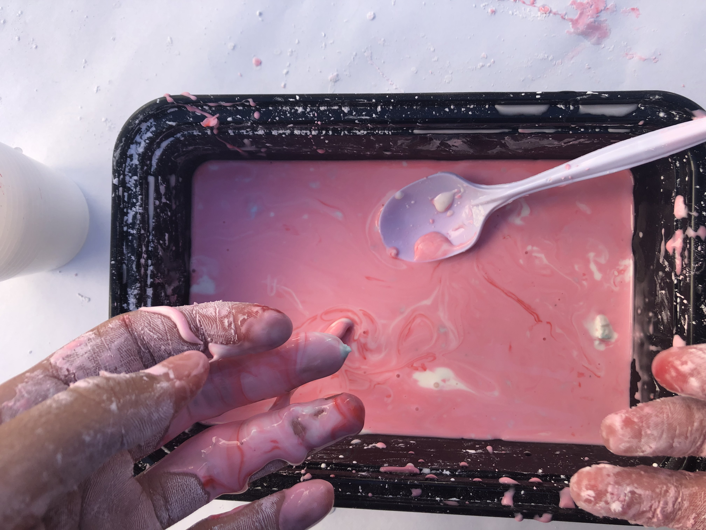
S2 Week 2
This week we started on a big project based on constructing a mousetrap car.
The goal is for the car to travel in a straight line and to drive as far as possible.
This is done by saving energy and finding the best ratios for your mousetrap car.
We did some research, and me and my partner used information from websites and many videos with helpful notes.
We filled out a proposal with all the information, and things we learned from the video like how certain ratios were important, and aspects like reducing fricting in axels and finding the correct wheel size and release speed.